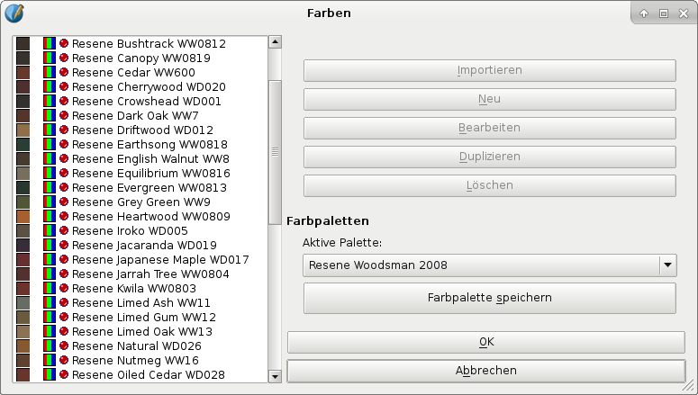

Resene Paints Limited is a New Zealand-based color vendor, and as the name suggests, concentrates on coatings, paints and other colors for interior design, with its main markets in the Pacific region, especially Australia and New Zealand. The focus on areas other than printing doesn’t mean that the color sets are useless in Scribus – quite the contrary. If they were, the Scribus Team wouldn’t bother including them in the first place. First of all it should be noted that in many cases a close matching between corporate or organizational colors on different levels is required, from coatings to print products. Second, Resene, just like other color manufacturers, provides color charts, which allow for easily verifying colors with a printer. Third, there is the aesthetic facet of Resene palettes, as they consist of carefully chosen and lively colors that can add to the appeal of your layout.
|  |
Resene color collections are updated on a regular basis, and thanks to an arrangement with the company, Scribus users will receive updated versions of the palettes with every new Scribus release. As you have already learned, this won’t affect documents that use older palette versions, since they are stored in the documents themselves, from which they can be imported into your current file. If you, for whatever reason, need to use an older Resene color set, perhaps even a palette that pre-dates the inclusion of Resene palettes in Scribus, you can download the palette as an AutoCAD color book file (*.acb) and use Swatchbooker to convert it into a Scribus XML palette file.